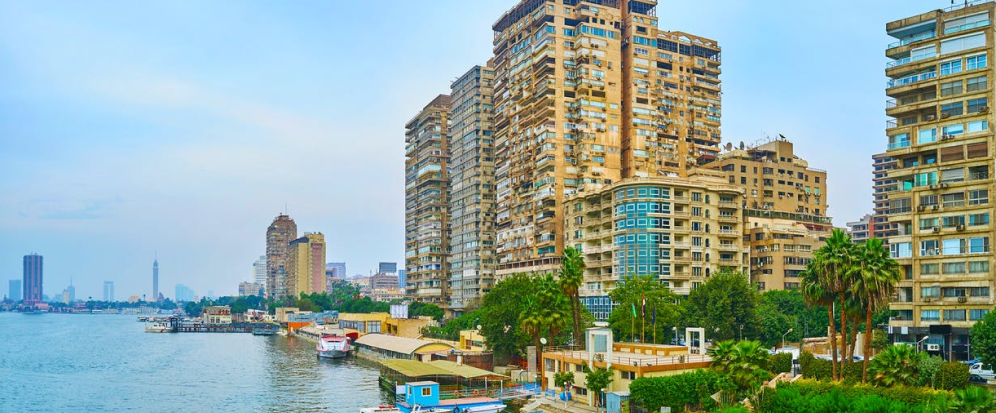
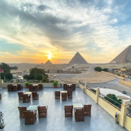
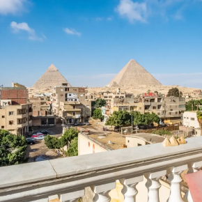
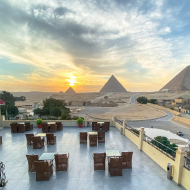
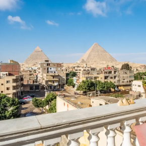

Fuzhou
Country
China
Climate
Humid Subtropical
Population
7.7 million
Welcome to
Fuzhou!
Fuzhou, the capital of southeast province of Fujian, also referred to as Rongcheng (city of Banyang trees), is an important southeast coastal city faces East China Sea as well as a nearest capital city of the country faces the island of Taiwan. Located in the downstream of Min River, Fuzhou is adjacent to Ningde City, Nanping City, Sanming City and Putian City.
The city is heavily populated by Han people, who live harmony with over 20 ethnic minorities of Manchu, Miao, Hui, and so on. Just as its Chinese name Fu implies, it is a city full of good fortunes. Fuzhou is one of the first open coastal cities in China. Mawei Fuzhou, the cradle of the modern Chinese Navy, has cultivated Chinese shipping culture. It is both a historic and a cultural city with over two-thousand-year of history. Such historical sites as Sanfang Qixiang, Fujian Tulou and Mount Wuyi combining natural scenery and tea culture are waiting for you to explore.

 



Experience the
Culture
Min opera, also known as Fuzhou drama, is one of the major operas in Fujian Province. It enjoys popularity in the Fuzhou area and in neighboring parts of Fujian where the Fuzhou dialect is spoken. There are more than 1,000 plays of Min opera, most of which originate from folk tales, historical novels, or ancient legends.
May 5th is the Dragon-boat Festival and the local traditions include dragon-boat race, Zhongzi wrapping and taking "noon water". Noon water refers to the water taken from the well at noon on the Dragon-boat Festival. All families of Fuzhou used to make tea and liquor with the "noon water" historically because the tea would be particularly mellow with fitness and ill-fortune-dispelling effects. It can also be used to clean the interior of home.
Enjoy
Delectable Cuisines

Bak Kut Teh
The name literally translates from the Hokkien dialect as "meat bone tea", and at its simplest, consists of meaty pork ribs simmered in a complex broth of herbs and spices (including star anise, cinnamon, cloves, dang gui, fennel seeds and garlic) for hours.
Buddha Jumps
Over the Wall
Buddha Jumps Over the Wall, also known as Buddha's Temptation, is a variety of shark fin soup in Fujian cuisine. The dish's name is an allusion to the dish's ability to entice the vegetarian monks from their temples to partake in the meat-based dish.
Yu Wan (Fish Ball)
There is an old saying 'if there are no fish balls, there is no dinner'. This shows just how popular the taste of fish balls is favored by local people of Fuzhou. You can have a taste of these at the Yonghe Fish Ball Store in Ta Xiang (lane).
Attractions
Worth Traveling For
Sanfang Qixiang
Sanfang Qixiang is the only remaining old quarter of Fuzhou. Preserving over 200 ancient folk houses mainly from the Ming and Qing dynasties, it is reputed as the “Architecture Museum of the Ming and Qing Dynasties”. Since its construction in the Jin Dynasty, a great many of scholars have lived here. Therefore, Sanfang Qixiang is also known as the origin of history and culture of Fuzhou.

Drum Hill (Gushan)
With a main peak of 925 meters above sea level and a total area of 48 square kilometers, Drum Hill or Mount Gu is the most famous beauty spot in Fuzhou City. Listed into the national scenic spots in China, Drum Hill features numerous historical sites and attractive natural beauties. Apart from the central site of Yongquan Temple, there are over 20 scenes in the east part of the hill, dozens of spots in the west, over 50 in the south and 45 in the north.

Fuzhou National Forest Park
Fuzhou National Forest Park, also known as Fuzhou Botanical Garden, was formerly known as Fuzhou Arboretum. Bijia Mountain is the highest, 643 meters above sea level. Surrounded by mountains on three sides, it faces Bayi Lake in the south. The main scenic area is divided into bamboo viewing area, tree viewing area, cultural landscape area, Longtan Scenic Area, Forest Museum, Bird Language Forest, and Rare Botanical Garden.